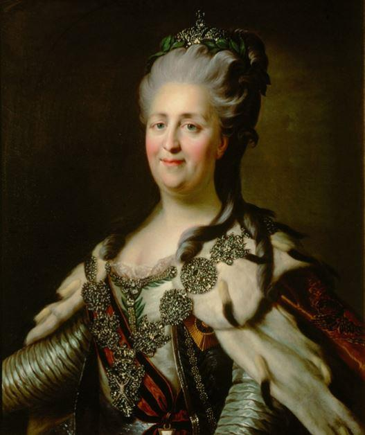
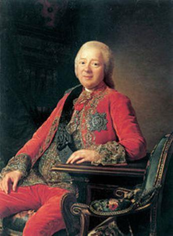
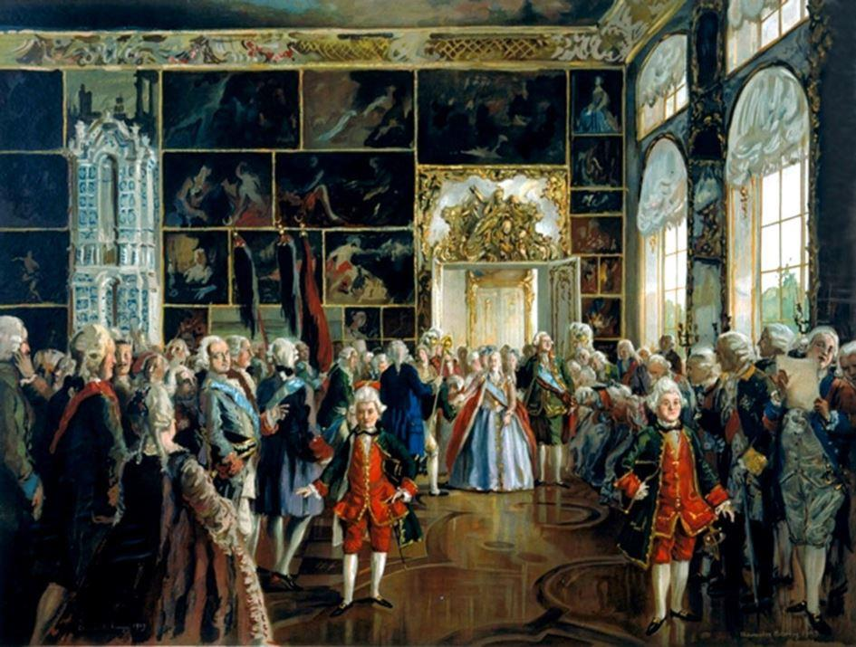

Quand Diderot envoyait un économiste libéral à la cour de Catherine II
par Benoit MALBRANQUE
En 1767, Diderot recommande à l’impératrice Catherine II de Russie le nom de Lemercier de la Rivière, physiocrate français, pour l’aider dans sa réforme du droit russe. « C’est l’apôtre de la propriété, dit-il, de la liberté et de l’évidence. De la propriété, base de toute bonne loi ; de la liberté, portion essentielle de la propriété, germe de toute grande chose, de tout grand sentiment, de toute vertu ; de l’évidence, unique contre-force de la tyrannie et source du repos. »
Ainsi que nous le savons bien, l’Impératrice Catherine II de Russie fut particulièrement mêlée à la scène littéraire et philosophique européenne. Admiratrice de l’Encyclopédie, correspondante de Voltaire, elle a aussi entretenu avec Denis Diderot une longue amitié.
À de nombreuses occasions, Catherine II profita de cette relation pour faire venir auprès d’elle quelques gloires qu’elle admirait. Un exemple des plus fameux fut celui d’Etienne Maurice Falconet (1716-1791). Ce sculpteur français fut un proche de Diderot, qui le missionna de composer l’article « Sculpture » de l’Encyclopédie.
En avril 1765, il fut recommandé à l’Impératrice russe, qui l’employa pendant plus de treize ans exactement, de septembre 1765 à septembre 1778.
Une autre fois, Diderot lui recommanda non un sculpteur, mais un économiste, et non seulement un économiste, mais un économiste libéral. Ce fut un disciple de François Quesnay, le physiocrate Mercier de la Rivière, en 1767.
Si nous souhaitons raconter cet épisode aujourd’hui, c’est qu’il reste encore peu connu, et que quand il est raconté, il l’est d’une manière très approximative, pour ne pas dire erronée.
L’ADMIRATION DE DIDEROT POUR MERCIER DE LA RIVIÈRE
Il peut paraître étonnant que Diderot ait envoyé un économiste libéral comme Mercier de la Rivière. En vérité, Diderot était un grand admirateur de cet économiste. Selon Charles de Larivière, Denis Diderot « mettait Mercier de la Rivière à côté et même au-dessus de Montesquieu. » [1] Compte tenu de la célébrité justement méritée de Montesquieu, comment comprendre cette préférence de Diderot ?
Mercier de La Rivière s’était fait connaître par un ouvrage intitulé L’Ordre naturel et essentiel des sociétés politiques, qui parut la première fois en 1767. Ancien conseiller au Parlement de Paris et intendant de la Martinique, l’économiste, disciple de Quesnay, acquit ainsi la plus grande des célébrités.
Il s’était fait déjà remarqué par ses qualités d’administrateur en Martinique, mais ce livre le propulsa à de bien autres niveaux. Tout ce que la France comptait de grands esprits se jetèrent sur ce livre, qui avait fait parler de lui et qui s’était en effet très bien vendu (deux éditions furent écoulées successivement).
Pendant qu’à Paris les esprits s’échauffaient sur le livre de Mercier de la Rivière, en Russie, Catherine II cherchait désespérément un grand esprit pour l’aider à réformer les lois de la Russie. La tsarine avait déjà rédigé une Instruction pour le code, une espèce de plan général fondé sur les maximes de Montesquieu, ainsi qu’elle l’avouera à d’Alembert en lui envoyant le texte : « Vous y verrez comment, pour l’utilité de mon Empire, j’ai pillé le président de Montesquieu sans le nommer ; j’espère que si de l’autre monde il me voit travailler, il me pardonnera ce plagiat pour le bien de 20 millions d’hommes qui doit en résulter. Il aimait trop l’humanité pour s’en formaliser. Son livre est mon bréviaire. » [2]
Catherine II avait d’abord jeté son dévolu sur l’italien Cesare Beccaria, l’illustre auteur du traité sur les Délits et les peines, dont elle s’était également beaucoup inspirée, mais sans le reconnaître. Malheureusement pour la tsarine, Beccaria refusa l’offre et resta en Italie pour enseigner l’économie politique. Catherine II manda donc à Diderot, qui était pour elle le plus grand des philosophes, de lui trouver un substitut.
Très impressionné par la lecture de L’Ordre naturel et essentiel des sociétés politiques, Diderot choisit son auteur Mercier de la Rivière. Il annonça ce choix à son ami Falconet, alors en Russie, dans des mots qui illustrent parfaitement la très grande admiration de Diderot pour l’économiste physiocrate.
« Dans six semaines, au plus tard, vous recevrez cette lettre, et vous embrasserez celui qui vous la remettra, parce qu’il te remettra une lettre de ton ami. Je ne vous nomme point cet homme. Il a reçu de la nature une belle âme, un excellent esprit, des mœurs simples et douces. La méditation assidue sur les plus grands objets et l’expérience des grandes affaires ont achevé de perfectionner l’ouvrage de nature. Ah ! si Sa Majesté Impériale a du goût pour la vérité, quelle sera sa satisfaction ! je la devine d’avance et la partage. Nous nous privons de cet homme pour vous. Il se prive de nous pour elle. Il faut que nous soyons tous étrangement possédés de l’amour du genre humain. Il sera précédé d’un ouvrage intitulé : De l’ordre naturel et essentiel des sociétés policées. C’est l’apôtre de la propriété, de la liberté et de l’évidence. De la propriété, base de toute bonne loi ; de la liberté, portion essentielle de la propriété, germe de toute grande chose, de tout grand sentiment, de toute vertu ; de l’évidence, unique contre-force de la tyrannie et source du repos. Jetez-vous bien vite sur ce livre. Dévorez-en toutes les lignes comme j’ai fait. Sentez bien toute la force de sa logique, pénétrez-vous bien de ses principes, tous appuyés sur l’ordre physique et l’enchaînement général des choses ; ensuite allez rendre à l’auteur tout ce que vous croirez lui devoir de respect, d’amitié et de reconnaissance. Nous envoyons à l’impératrice un très-habile, un très-honnête homme. Nous vous envoyons à vous un galant homme, un homme de bonne société. Ah ! mon ami, qu’une nation est à plaindre, lorsque des citoyens tels que celui-ci y sont oubliés, persécutés et contraints de s’en éloigner, et d’aller porter au loin leurs lumières et leurs vertus ! Nos premières entrevues se sont faites dans la petite maison. Nous nous y retrouverons aujourd’hui pour la dernière fois. Lorsque l’impératrice aura cet homme-là, et de quoi lui serviraient les Quesnay, les Mirabeau, les de Voltaire, les d’Alembert, les Diderot ? À rien, mon ami, à rien. C’est celui-là qui a découvert le secret, le véritable secret, le secret éternel et immuable de la sécurité, de la durée et du bonheur des empires. C’est celui-là qui la consolera de la perte de Montesquieu. » [3]
Très admiratrice de l’œuvre de Mercier de la Rivière également, Catherine II ne fut pas surprise du peu de cas que le pouvoir royal français faisait de cet économiste. Après tout, quelques mois auparavant, le livre de Beccaria, qu’elle admirait beaucoup, avait été interdit en France parce qu’il « manquait de respect à la législation ». Ce qu’elle craignait en revanche, c’est que la France n’empêche le départ de Mercier de la Rivière pour Saint-Pétersbourg.
 Nikita Ivanovich PaninPour cette raison, elle incite ses correspondants en France à la plus grande prudence. Elle écrit à son correspondant, M. Panin :
« Monsieur Panin. Je vous conjure d’écrire à Stakelberg et, s’il n’est plus en France, au prince Galitzin, pour qu’ils entrent en négociations avec ce M. de la Rivière pour transporter cet homme en Russie. Souvenez-vous surtout de ne point compromettre son nom, afin que le ministère de la France ne l’empêche pas de venir ici. Ayant été longtemps employé à La Martinique, il y a de très bonnes idées dans son mémoire, et il nous sera plus utile qu’à eux qui ne savent pas s’en servir. » [4]
Catherine II débloqua pas moins de 12 000 livres pour financer le transport de notre économiste, qui ne tarda pas à accepter l’offre. Les lauriers de la gloire n’avaient pas tardé à venir pour Mercier de la Rivière. Le succès littéraire était encore tout frais quand il partit en direction de la Russie, et pour cause : son livre n’avait paru que depuis huit jours.
Mercier de la Rivière partit donc à Saint Pétersbourg, où il attendit l’impératrice de Russie, restée à Moscou. Le 26 septembre 1767, après un long voyage, il arriva passablement fatigué dans la ville où il devait retrouver la tsarine.
UN VOYAGE QUI TOURNE COURT
Une lettre de Mercier de la Rivière à Diderot nous informe qu’à peine quelques jours après son arrivée, notre économiste prévoit déjà son retour en France. Nous ne savons pas si cela est le résultat d’une brouille avec Catherine II et avec ses hommes, ou simplement à cause du climat, comme nous l’affirme Mercier de la Rivière. [5] En tout cas, l’économiste physiocrate patientait à Saint-Pétersbourg et regrettait peut-être sa venue.
Dans cette attente, et sans doute en partie à cause d’elle, Mercier de la Rivière cultiva un esprit étonnamment critique envers la nation russe. Il rabaissa ce pays, peut-être parce qu’il l’accueillait d’une façon qui ne lui convenait pas, en le faisant attendre de manière excessive. Deux semaines après son arrivée, il écrivit une lettre à l’abbé Raynal, dans lequel il tint un langage très vigoureux à l’encontre de la Russie :
« Mon cher abbé, tout est à faire dans ce pays. Pour parler mieux encore, il faudrait dire : tout est à défaire et à refaire. Vous sentez bien qu’il est impossible que le despotisme arbitraire, l’esclavage absolu et l’ignorance n’aient pas planté des abus de toute espèce qui ont jeté des racines très profondes, car il n’y a point de plante si féconde, si vigoureuse que les abus. Ils croissent partout où l’ignorance les cultive. […] Vous voyez que j’ai lieu d’espérer que mon voyage ne sera pas infructueux à l’humanité. » [6]
Ces remarques illustrent bien les préjugés de Mercier de la Rivière à l’égard de la nation russe, préjugés qui s’étaient transformées en certitudes, dirons-nous en évidences, avant sa rencontre finale avec Catherine II.
Cette rencontre était un sujet d’éternelle excitation pour l’économiste français. Tandis qu’en France les succès de la Physiocratie étaient encore difficiles à déceler, voilà que Mercier de la Rivière, revenu de la Martinique sans beaucoup d’éloges, s’apprêtait à appliquer les idées de l’école de Quesnay à une nation de plus de 20 millions d’âmes. Pris par cet enthousiasme certainement excusable, Mercier de la Rivière tint devant la tsarine des propos qui parurent offensants à la nation russe.
Annoncé par des histoires qui le rendaient indésirable, Mercier de la Rivière eut donc également un comportement très excessif à son arrivée en Russie. C’est en tout cas ce que raconte le comte de Ségur dans ses Mémoires. Il dit que l’Impératrice a tenu ces mots :
« M. de La Rivière, me dit l’impératrice, se mit en route avec promptitude ; et, dès qu’il fut arrivé, son premier soin fut de louer trois maisons contiguës, dont il changea précipitamment toutes les distributions, convertissant les salons en salles d’audiences, et les chambres en bureaux.
M. Le philosophe s’était mis dans la tête que je l’avais appelé pour m’aider à gouverner l’empire, et pour nous tirer des ténèbres de la barbarie par l’expansion de ses lumières. Il avait écrit en gros caractères sur les portes de ses nombreux appartements : département de l’intérieur, département du commerce, département de la justice, département des finances, bureaux des impositions, etc. ; et en même temps il adressait à plusieurs habitants russes ou étrangers, qu’on lui indiquait comme doués de quelque instruction, l’invitation de lui apporter leurs titres pour obtenir les emplois dont il les croirait capables.
Tout ceci faisait un grand bruit dans Moscou, et comme on savait que c’était d’après mes ordres qu’il avait été mandé, il ne manqua pas de trouver bon nombre de gens crédules, qui d’avance lui faisaient leur cour.
Sur ces entrefaites j’arrivai, et cette comédie finit. Je tirai ce législateur de ses rêves ; je m’entretins deux ou trois fois avec lui de son ouvrage, sur lequel j’avoue qu’il me parla fort bien ; car ce n’était pas l’esprit qui lui manquait. La vanité seule avait momentanément troublé son cerveau. Je le dédommageai convenablement de ses dépenses. Nous nous séparâmes contents ; il oublia ses songes de premier ministre, et retourna dans son pays en auteur satisfait, mais en philosophe un peu honteux du faux pas que son orgueil lui avait fait faire. »
Ce fut en faisant allusion à cette anecdote que l’impératrice écrivit à Voltaire : « M. de La Rivière est venu ici pour nous législater. Il nous supposait marcher à quatre pattes, et très poliment il s’était donné la peine de venir de la Martinique pour nous dresser sur nos pieds de derrière. » (Mémoires du comte de Ségur, Œuvres complètes de M. le comte de Ségur, Paris, 1826, pp.39-40)
Et c’en fut fini des espoirs de l’école libérale française quant à l’application de leurs idées dans un pays aussi grand et aussi peuplé que la Russie.
B.M.
Notes :
1 Charles de Larivière, « Mercier de La Rivière à Saint-Pétersbourg en 1767 d’après de nouveaux documents », Revue d’histoire littéraire de la France, 4ème année, N°4, 1897, p.581.
2 Cité par Albert Lortholary, Le mirage russe en France au XVIIIème siècle, Éditions contemporaines, Paris, 1951, p.102.
3 Denis Diderot, Lettres à Falconet, Texte établi par J. Assézat et M. Tourneux, Garnier, 1875-77 (XVIII, pp. 229-251), Lettre XIV, juillet 1767.
4 Lettre de Catherine II à Panin, Recueil de la Société impériale historique russe, tome 20, p.240.
5 Lettre de Mercier de la Rivière à Diderot, 4/15 octobre 1767.
6 Cité dans Edmund Richner , Le Mercier de La Rivière: ein Führer der physiokratischen Bewegung in Frankreich, Girsberger, 1931, p.58.
Partager cette page